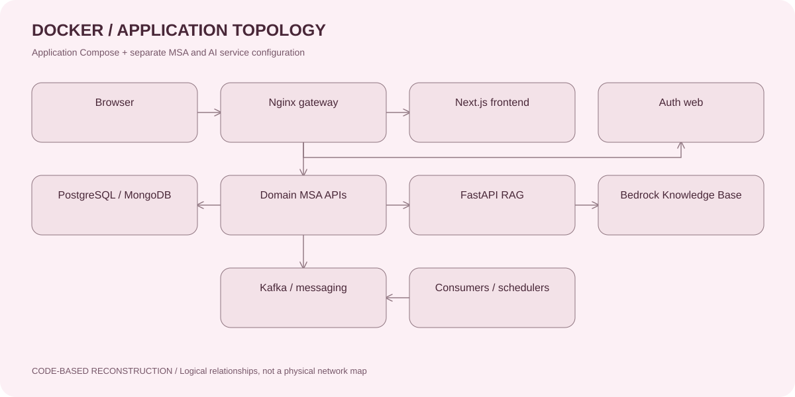
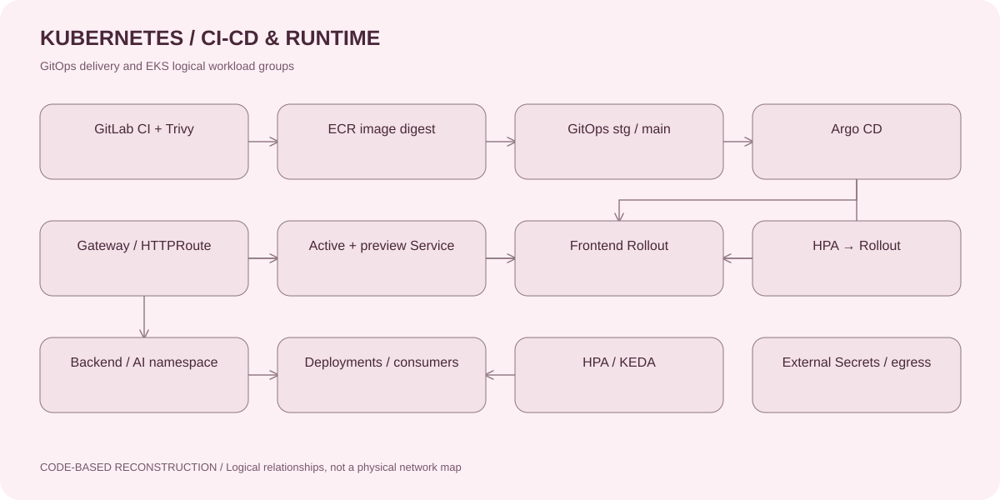
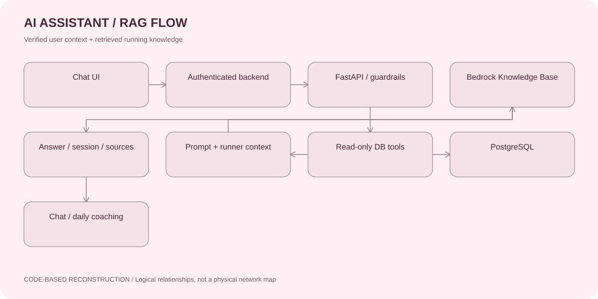
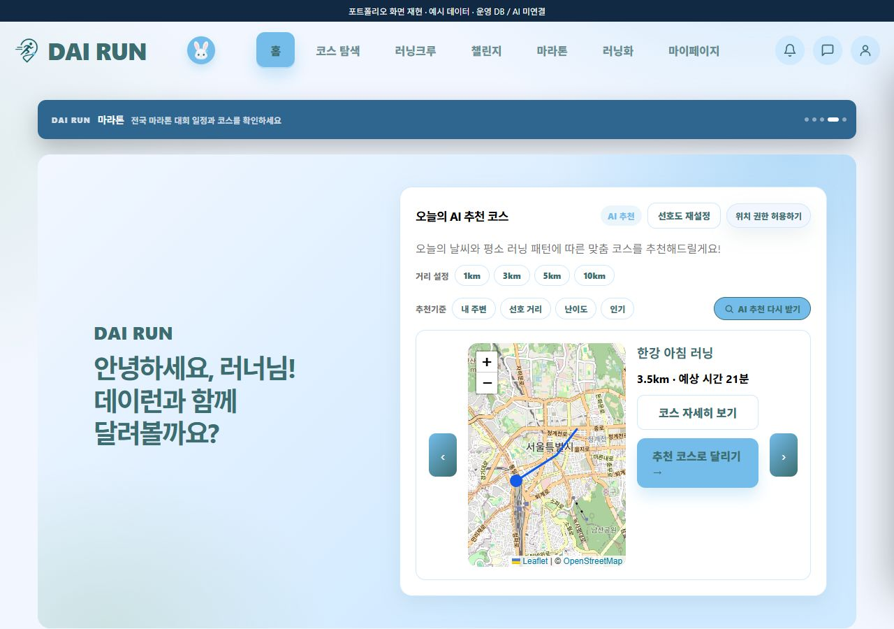
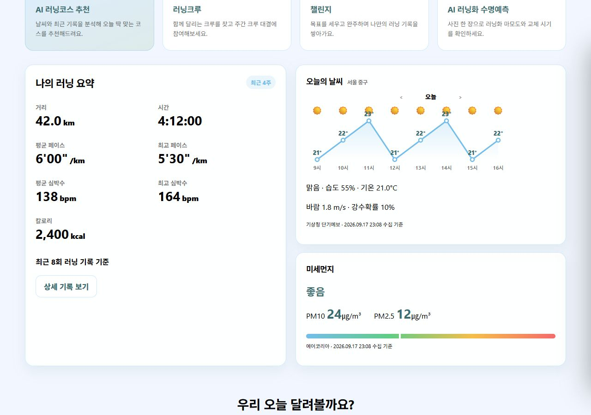
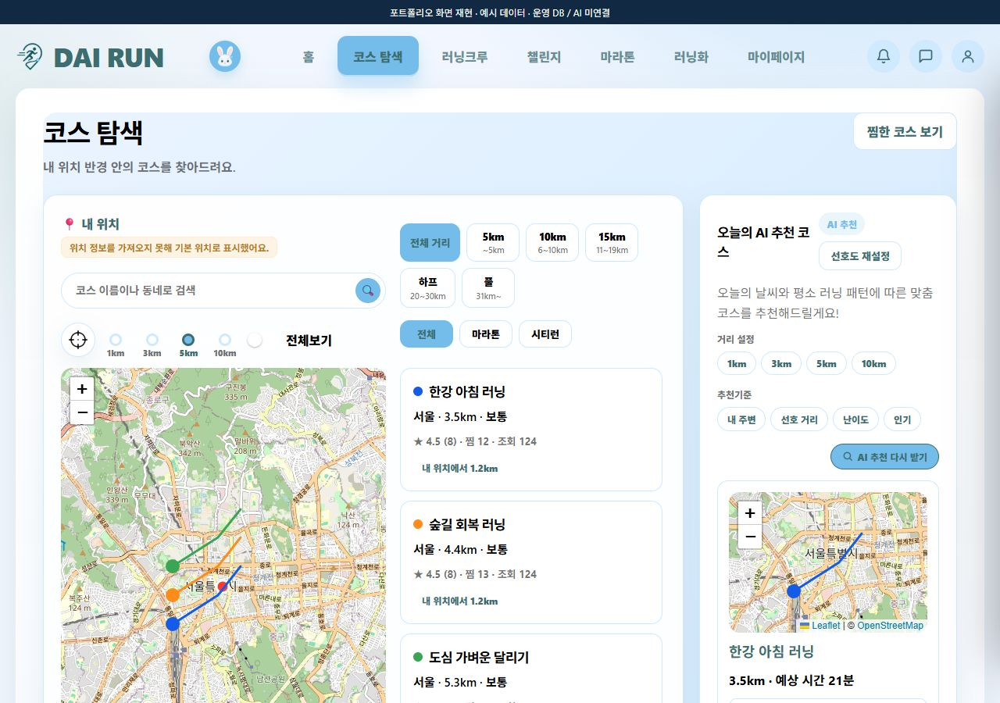
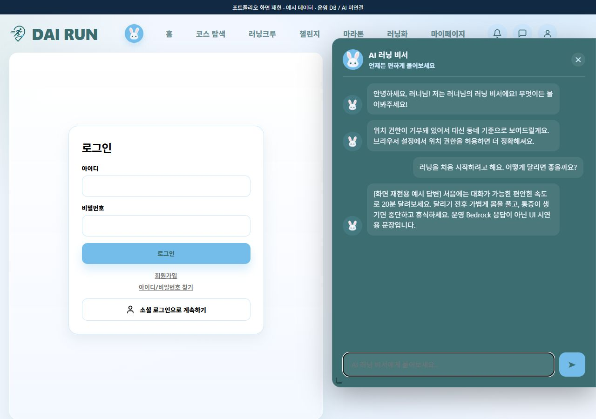
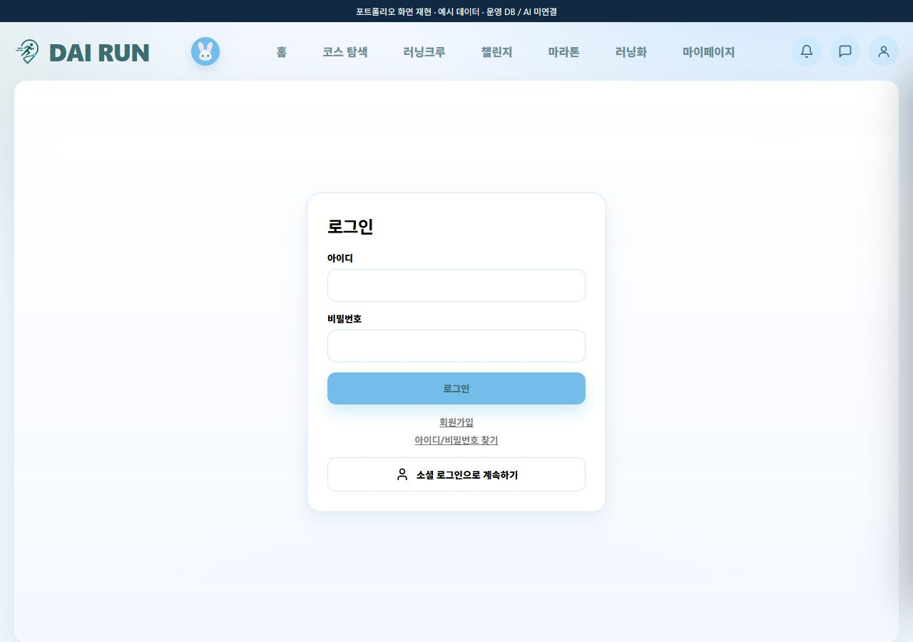

배포 경로의 일관성
Jenkins·Harbor 기반 환경의 경험을 GitLab Runner·ECR·EKS로 확장했습니다. 빌드할 서비스와 배포할 이미지를 명시하고, 검사 결과와 GitOps 변경을 연결했습니다.
러닝 서비스의 온프레미스 CI/CD를 AWS EKS 운영 흐름으로 확장했습니다. 변경 감지, 이미지 보안 검사, GitOps 변경 검토와 배포 전환을 연결하고, AI 러닝 비서의 RAG·데이터 연동을 구축했습니다.
배포 파이프라인과 운영 환경 연결을 중심으로 작업하고, FastAPI 기반 러닝 RAG 서비스의 개인화·DB 조회·가드레일과 백엔드 인계를 진행했습니다. 서비스 전체 UI와 12개 MSA는 팀 공통 산출물로 소개합니다.
Jenkins·Harbor 기반 환경의 경험을 GitLab Runner·ECR·EKS로 확장했습니다. 빌드할 서비스와 배포할 이미지를 명시하고, 검사 결과와 GitOps 변경을 연결했습니다.
러닝 지식 검색에 사용자 프로필·최근 기록·주변 환경 정보를 결합했습니다. RAG 응답과 세션·출처 계약을 정의하고 웹/백엔드와 연결했습니다.
코스 탐색, 러닝 기록, 크루, 챌린지, 러닝화와 인증은 팀 서비스 맥락입니다. 아래 화면은 팀 소스로 재현한 예시이며 개인의 전체 프론트엔드 개발 성과로 표시하지 않습니다.
strongSwan·IPsec/IKEv2·NAT-T와 정적 경로를 검토해 온프레미스–AWS 연결을 구성했습니다. 네트워크 권한·NAT 제약에 따라 검증 범위를 조정한 경험을 배포 환경 설계에 반영했습니다.
온프레미스 Jenkins·SonarQube·Harbor에서 시작해 AWS GitLab CI·ECR·GitOps로 확장한 배포 구성입니다. 변경 감지부터 클러스터 반영까지 각 단계의 입력과 실패 조건을 명확히 했습니다.
services.tsv에 감시 경로·Dockerfile·빌드 컨텍스트·ECR 저장소를 연결했습니다. MR은 diff base, 일반 push는 이전 SHA를 기준으로 변경 대상을 계산하고 FORCE_SERVICES로 명시적 재빌드를 지원합니다.
변경 서비스 중 test target이 있는 대상만 단위 테스트합니다. 최종 SonarQube는 분석·Gate 결과 수집을 유지하는 비차단 검사입니다. Trivy는 HIGH/CRITICAL 보고서를 남기고 수정 가능한 CRITICAL이 있으면 ECR push 전에 실패시킵니다.
Docker 이미지를 커밋 SHA·파이프라인 번호 기반 태그로 생성합니다. Trivy는 Runner UID/GID와 Docker socket 그룹으로 실행해 캐시·보고서 소유권 문제를 줄이고, 보고서는 14일 보관합니다.
검사 통과 후 ECR로 push하고 SHA-256 digest를 조회·검증합니다. 조회 지연은 제한된 재시도로 처리하며, digest를 얻지 못하면 GitOps 갱신으로 넘어가지 않습니다.
prod frontend/backend/AI 매니페스트를 갱신한 뒤 diff와 Kustomize 렌더링을 확인합니다. GitOps stg → main MR을 push option으로 생성하고 프로젝트 정책에 맞춰 자동 병합을 요청합니다.
Argo CD가 main을 동기화합니다. 프론트엔드는 active/preview Service와 Rollout을 구성하고 HPA 참조도 함께 전환했습니다. 최종 소스는 자동 promotion이며, 초기 smoke 검증은 수동 promotion으로 분리했습니다.
resource_group: production-gitops가 파이프라인 간 동시 배포를 직렬화합니다. 서비스별 병렬 matrix 빌드는 후속 개선 과제입니다.allow_failure: true, qualitygate.wait=false; after_script에서 결과를 별도 조회.--severity CRITICAL --ignore-unfixed --exit-code 1. 수정 불가능한 취약점도 보고서에는 유지.증상·원인 — 루트 Next.js 빌드에 독립 프로젝트가 포함되고, root 소유 Trivy 캐시가 다음 Job의 쓰기를 막았습니다.
해결 — .dockerignore와 TypeScript 제외 범위를 정리하고 Trivy 컨테이너를 Runner UID/GID로 실행했습니다.
배운 점·보완 — 애플리케이션 오류와 빌드 컨텍스트·파일 소유권 오류를 분리해 진단했습니다. 서비스별 빌드 경계를 더 자동 검증할 계획입니다.
증상·원인 — 비운영 Java 실험 코드의 컴파일 산출물 누락으로 분석이 중단됐고, 이후에는 전체 레거시가 New Code로 계산됐습니다.
해결 — 실험 코드를 분석 대상에서 제외하고 특정 분석을 기준선으로 지정했습니다. 기존 이슈는 Overall Code에 유지하고 임계값을 낮추지 않았습니다.
배운 점·보완 — 기록상 Pipeline #53의 검사 단계가 통과했습니다. 최종 SonarQube는 비차단 상태이므로, 테스트 커버리지 보완 후 차단형 승격을 과제로 남겼습니다.
증상·원인 — REST API 기반 MR 생성이 토큰 권한에 막혔습니다.
해결 — API 스코프를 늘리는 대신 write_repository 권한으로 가능한 Git push option을 사용했습니다.
배운 점·보완 — 자동화가 필요로 하는 작업 단위에 맞춰 권한을 설계했습니다. 토큰과 검사 로그의 취급을 분리했습니다.
증상·원인 — Rollout 전환으로 main에서 삭제·변경된 파일을 stg가 계속 참조했습니다.
해결 — main의 변경을 stg에 병합해 선언 상태를 재정렬하고 이후 배포 MR을 진행했습니다.
배운 점·보완 — 이미지 갱신뿐 아니라 장기 배포 브랜치의 기준선도 관리해야 함을 배웠습니다. 갱신 전 drift 검증을 보완 과제로 정리했습니다.
증상·원인 — 수동 promotion 대기를 배포 실패로 오판해 되돌리는 과정에서 Deployment와 Rollout의 selector가 겹쳤습니다.
해결 — 의도된 대기 상태를 구분하고 선언을 복구했습니다. Application의 ignoreDifferences, HPA 참조, 기존 Deployment 정리도 함께 점검했습니다.
배운 점·보완 — 배포 성공 판단을 MR 병합·Sync·Ready·트래픽 응답으로 나눴습니다. 전환 중 짧은 503 기록이 있어 절대적인 무중단 성과로 표현하지 않습니다.
증상·원인 — 온프레미스 DNS 잔존, DB 라벨·role 누락, 실제 kube-dns Service IP와 egress 정책 불일치가 겹쳤습니다.
해결 — ConfigMap·NetworkPolicy·DB 권한을 계층별로 교정하고 실제 DB 조회와 외부 DNS 요청으로 확인했습니다.
배운 점·보완 — Pod 상태에 더해 SELECT 1, DNS, 외부 API를 확인하는 운영 점검 관점을 얻었습니다.
당시 작업 기록과 최종 소스를 교차 확인했습니다. 현재 AWS 운영 환경을 재검증한 결과는 아닙니다. 초기 시연 문서의 RollingUpdate·수동 승인 설정과 최종 Rollout·자동 promotion 설정은 시점 차이로 구분했습니다.
단순한 범용 질의응답에서 출발해, 러닝 지식과 사용자의 상황을 함께 전달하는 서비스로 확장했습니다. Spring Boot Bedrock 호출 실험 후 FastAPI 서비스로 분리하고 웹/백엔드와 요청·응답 계약을 맞췄습니다.
Bedrock Knowledge Base의 retrieve_and_generate를 연결했습니다. 러닝 부상·대회 준비·다이어트·복장과 용품 관련 원천 자료를 정리하고, 응답에 sessionId와 참고 자료 URI를 포함했습니다.
러닝 수준·목표·주간 횟수·통증 여부를 프롬프트에 반영했습니다. PostgreSQL의 프로필·최근 러닝 기록·날씨·대기질·주변 코스·챌린지 조회를 연결했습니다.
인증·권한은 웹/백엔드에서 확인하고 검증된 userId를 AI 서비스에 전달하도록 인계했습니다. 채팅과 오늘의 코칭 API, 오류 응답, timeout과 서비스 주소의 관리 경계를 문서화했습니다.
프롬프트 인젝션·자격증명 요청·의료 진단 오인·도메인 이탈을 검사합니다. 가드레일과 모델 호출의 순서를 분리하고, 후속 질문·세션 문맥을 고려했습니다.
원인 — 초기 DB 도구가 실제 테이블·컬럼과 달랐습니다.
조치 — information_schema와 기존 SQL/TypeScript 쿼리를 읽기 전용으로 확인해 조회 도구를 수정했습니다.
결과 — 작업일지에서 DB 조회와 프롬프트 문맥 생성을 확인했습니다. 해당 검증 시점의 Bedrock 최종 답변은 미검증으로 구분합니다.
원인 — 한글 접두어 매칭이 정상 질문을 차단하는 오탐을 만들었습니다.
조치 — 가드레일 매칭을 교정하고 정상 질문과 차단 질문을 구분해 점검했습니다.
보완 — 허용·차단·다중 대화의 회귀 사례를 지속적으로 확장하는 것이 중요했습니다.
원인 — 초기 코드와 설정 예시에 연결정보가 섞여 있었습니다.
조치 — 환경변수와 AWS 기본 자격증명 체인을 사용하도록 변경하고 알려진 노출 패턴을 재검색했습니다.
배운 점 — 코드 제거와 자격증명 교체는 별도 작업입니다. 공개 화면에는 연결값과 대화 원문을 포함하지 않았습니다.
별도 코스 추천 통합에서는 SSR이 timeout 없는 Bedrock 응답을 동기 대기했습니다. timeout·백그라운드 처리·중복 요청 방지·재조회를 적용했습니다.
당시 보고서의 초기 응답 측정은 5.58초 → 0.099초입니다. 특정 실습 측정이며 챗봇 응답 속도나 일반적인 SLA로 확대하지 않았습니다.
최종 코드와 문서에서 서비스 관계를 추려 재구성한 편집 가능한 구성도입니다. Docker는 앱 Compose와 별도 MSA·AI 구성을 요약하고, Kubernetes는 EKS GitOps의 배포·런타임 관계를 보여줍니다.
현재 확인한 GitHub main에는 원본 .drawio가 없어, 아래 파일은 포트폴리오용 재구성본으로 표시했습니다.



팀 서비스의 Next.js 소스와 컴포넌트를 로컬에서 실행한 화면입니다. 운영 DB·Bedrock 대신 예시 데이터를 사용했습니다. 화면 컷을 동일한 1280×900 규격으로 정리하고 PDF에도 컷마다 한 페이지씩 담았습니다.





Job 성공에서 끝내지 않고 MR 상태·Argo Sync·Ready·실제 HTTP 응답을 함께 봅니다. 자동화의 마지막 확인 지점이 사용자 트래픽이라는 관점을 얻었습니다.
digest pin, 취약점 차단, 배포 직렬화와 승인 정책을 코드로 표현했습니다. 다음 단계는 pre/post 배포 검증과 자동 rollback 조건을 명시하는 것입니다.
향후 독립 서비스 빌드·스캔을 병렬 matrix로 나누고, digest 결과를 모은 후 GitOps 갱신을 한 번만 수행하는 구성을 검토합니다. 현재 구현 완료로 표시하지 않았습니다.
가드레일 오탐, 실제 DB 스키마, timeout과 대화 세션을 함께 다룹니다. 출처 유효성·허용 질문·실패 응답을 고정 평가 사례로 관리하는 것이 다음 과제입니다.
CI / Registry GitLab CI · GitLab Runner · Jenkins · Docker · Harbor · Amazon ECR
Security SonarQube · Trivy · OWASP ZAP · 환경변수 / CI masked variables
CD / Cluster GitOps · Kustomize · Argo CD · Argo Rollouts · AWS EKS · HPA / KEDA
AI / Data Python · FastAPI · boto3 · Amazon Bedrock Knowledge Base · PostgreSQL · PostGIS
Network / Ops strongSwan · IPsec / IKEv2 · NAT-T · DNS · NetworkPolicy · External Secrets
Team application Next.js · React · TypeScript · MSA · Kafka / SNS·SQS